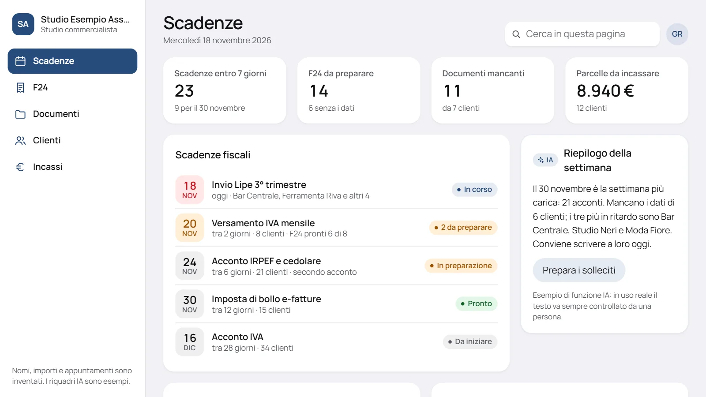

Gestionale dello studio
Scadenze con il conto alla rovescia, F24 da preparare e pagati, documenti dei clienti e parcelle da incassare.
Vai al servizioHome / Per il tuo settore / Studi commercialisti
ProfessionistiPer studi commercialisti, consulenti del lavoro e centri di assistenza fiscale.

I clienti mandano le ricevute su WhatsApp, una alla volta, il giorno prima. Gli F24 si controllano a mano e le parcelle restano da incassare per mesi.
Scadenze con il conto alla rovescia, F24 da preparare e pagati, documenti dei clienti e parcelle da incassare.
Vai al servizioUn promemoria a ogni cliente con l'elenco di cosa manca, e un posto unico dove caricarlo.
Vai al servizioRisponde su orari, documenti da portare e scadenze del mese. Sui casi specifici passa la parola allo studio.
Vai al servizioLa scadenza del mese in 30 secondi, o un tema fiscale spiegato in camera con schede animate.
Vedi i formati videoAttività inventate, costruite da noi: le apri dal telefono o dal computer e le provi. Le foto delle demo sono generate con l'IA.
Formati da ordinare: li montiamo con il materiale che hai già, anche con l'IA. Per ognuno trovi cosa si vede e quanto dura.
I lavori dei clienti li mostriamo in call, con il loro permesso.
Raccontaci la tua attività. Prima vedi una proposta, poi decidi.